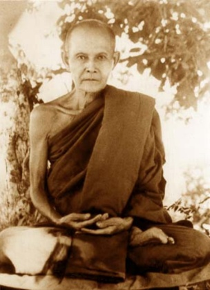

The Abhayagiri Community take turns reading from translations of the Thai Forest masters. Ajahn Pasanno answers many questions following the readings.
External websiteSession 1: No Bargaining with the King of Death
Session 2: The Training of the Heart
Session 3: Watch Your Mind and Escape Mara's Snare Part 1
Session 4: Watch Your Mind and Escape Mara's Snare Part 2
Session 5: Keeping the Breath in Mind and Lessons in Samādhi
Session 6: The Peace Beyond
Session 8: Birth and Death
Session 9: Not Sure
Session 10: Detachment within Activity
Session 11: Direct Route to the End of All Suffering
Session 12: Unshakeable Peace
Session 13: Khandavimutti and Samangidhamma
Session 14: Visions of a Samaṇa
Session 15: Unshakeable Peace
Session 16: A Higher Training
Session 17: Fearless Warrior Spirit and Blessing of a Lifetime
Session 18: The Spirit of a Warrior and Kor Patipada
Session 19: Pure and Simple
Session 55: Training under Ajahn Chah
[Session] Ajahn Pasanno begins the retreat by encouraging us to return to the basics of the Noble Eight-fold Path. He mentions Iris Landsberg, a long-standing lay supporter dying of lung cancer, both to set the tone for the monk's final visit to her and to encourage us to practice while there is still time. Iris passed away February 1, 2014. [Eightfold Path] [Sickness] [Death] [Mutual lay/Saṅgha support] [Sense of urgency] // [Ajahn Pasanno] [Meditation retreats] [Family] [Health care]
Sutta: DN 16.34: The world will not be devoid of awakened beings as long as people are practicing the Eightfold Path. [Stages of awakening]
Story: Ajahn Pāvaro decides to practice in Bodh Gaya after receiving worrying medical news. [Ajahn Pavaro] [Visiting holy sites] [Impermanence]
Sutta: MN 131: Bhaddekaratta Sutta (Amaravati Chanting Book, p. 75)
1. [0:26] Ajahn Karuṇadhammo describes the scope and format of the Winter Retreat 2014 readings.
2. [2:12] Recollection: This talk was given to a group of Western monks led by Ajahn Khantipālo paying respects to Ajahn Chah in Bangkok. Recounted by Ajahn Pasanno and Ajahn Karuṇadhammo. [Ajahn Khantipālo] [Ajahn Chah] // [Ajahn Sumedho] [Translation] [Hearing the true Dhamma]
3. [4:47] Reading: Ajahn Chah, “The Training of the Heart” from Collected Teachings of Ajahn Chah, pp. 505-516. Read by Ajahn Karuṇadhammo.
4. [32:24] “Was this talk given on a formal occasion?” [Teaching Dhamma] [Ajahn Chah] // [Thai sects]
5. [35:45] “What did Ajahn Chah mean by 'Nowadays there are only sterile remains of the Dhamma.'” [Ajahn Chah] [Dhamma] // [Culture/Thailand] [Practicing in accordance with Dhamma] [Liberation]
1. [0:00] Ajahn Ñāṇiko compares Ajahn Liem to Ajahn Sao. [Ajahn Liem] [Ajahn Sao] // [Technology]
2. [0:51] Reading: Ajahn Liem, “Watch Your Mind and Escape Māra's Snare” from Santi – Peace Beyond Delusion by Ajahn Liem, pp. 6-23. Read by Ajahn Ñāniko.
[Session] Reading: Ajahn Liem, “Watch Your Mind and Escape Māra's Snare” from Santi – Peace Beyond Delusion by Ajahn Liem, pp. 23-36. Read by Ajahn Ñāniko.
[Session] Reading: Ajahn Lee, “Introduction” and “The Art of Letting Go” from Keeping the Breath in Mind and Lessons in Samādhi by Ajahn Lee Dhammadharo pp. v-viii and 28-30. Read by Ajahn Jotipālo.
1. [30:00] “Does anyone know the Thai word that Ajahn Ṭhānissaro translates as “preoccupations?”” Answered by Ajahn Pasanno and Ajahn Jotipālo. [Thai] [Translation] [Ajahn Ṭhānissaro]
2. [31:44] “Was there much contact between the sphere of Wat Pah Pong and the sphere of Wat Asokaram (Ajahn Lee's monastery)?” [Wat Pah Pong] [Ajahn Chah] [Wat Asokaram] [Ajahn Lee Dhammadharo] // [Ajahn Anan] [History/Thai Buddhism] [Thai sects] [Conflict]
3. [33:30] “Why was the Dhammayut/Mahanikai split so strong?” [Thai sects] [Conflict] // [Ajahn Chah]
4. [35:02] “Why did conflict between the sects break out on almsround?” [Thai sects] [Conflict] [Almsround] // [Culture/Thailand]
5. [36:04] “Before Ajahn Chah, were there any Mahanikai teachers worthy of respect?” [Ajahn Chah] [Thai sects] // [Ajahn Kinaree] [Ajahn Tongrat] [Ajahn Mun]
6. [37:29] “Where did Ajahn Taungrut and Ajahn Kinaree live?” [Ajahn Tongrat] [Ajahn Kinaree] // [Ajahn Mun]
7. [38:05] “Did the Dhammayut/Mahanikai differences matter to serious practice monks?” [Thai sects] [Monastic life] // [Pāṭimokkha] [Saṅgha] [Ajahn Baen] [Ajahn Mun] [Ajahn Mahā Boowa]
[Session] Reading: Ajahn Chah, “The Peace Beyond” from Collected Teachings of Ajahn Chah, pp. 9-19. Read by Ajahn Ahiṃsako.
[Session] Reading: Ajahn Mahā Boowa, “Birth and Death” from Straight from the Heart by Ajahn Mahā Boowa, pp. 55-71. Read by Ajahn Cunda.
1. [0:00] Reading: Interview with Ajahn Bprasert Thavaro from Twigs and Branches of the Bodhinyana. Read by Ajahn Kaccāna. [Ajahn Chah] // [Practicing in accordance with Dhamma] [Impermanence]
2. [0:42] Reading: Ajahn Chah, “Not Sure” from Collected Teachings of Ajahn Chah, pp. 599-612. Read by Ajahn Kaccāna.
3. [36:20] “What does paṭipadā mean?” [Eightfold Path] // [Continuity of mindfulness] [Ajahn Chah] [Investigation of states]
[Session] Reading: “Detachment Within Activity” from Collected Teachings of Ajahn Chah, pp. 291-304. Read by Ajahn Kovilo.
1. [26:24] “What degree of pīti and sukha is necessary to establish the first jhāna?” [Rapture] [Happiness] [Jhāna] // [Hindrances] [One pointedness] [Directed thought and evaluation]
2. [28:27] “Do the underlying tendencies still exist in first jhāna?” [Unwholesome Roots] [Jhāna] // [Concentration]
3. [29:14] “When Ajahn Mahā Boowa says that the peaceful mind is the gathering place for the defilements, are these the underlying tendencies?” Answered by Ajahn Pasanno and Ajahn Jotipālo. [Ajahn Mahā Boowa] [Concentration] [Unwholesome Roots] // [Knowledge and vision] [Relinquishment] [Delusion] [Stages of awakening]
4. [31:57] “What are the three kinds of seclusion? What is upadhiviveka?” [Seclusion] // [Clinging] [Self-identity view] [Aggregates] [Becoming]
[Session] Reading: “The Direct Route to the End of All Suffering” from Arahattamagga Arahattaphala by Ajahn Mahā Boowa, pp. 9-23. Read by Tan Pamutto.
1. [31:42] “Ajahn Chah took Ajahn Mahā Amon and Ajahn Sumedho to visit Luang Ta Mahā Boowa and Ajahn Kaew. What happened?” [Ajahn Chah] [Ajahn Mahā Amorn] [Ajahn Sumedho] [Ajahn Khao] // [Teaching Dhamma] [Simplicity]
Story: Ajahn Chah turned on a tape recorder, but the only part of the conversation that was recorded was when Ajahn Kaew farted. [Technology] [Psychic powers]
Note: A partially similar story appears in Stillness Flowing by Ajahn Jayasaro, p. 189.
2. [35:44] “Do you have any advice for working with pain?” [Pain] // [Ajahn Mahā Boowa] [Investigation of states] [Meditation/Techniques] [Direct experience]
[Session] Reading: Ajahn Chah, “Unshakeable Peace” from Collected Teachings of Ajahn Chah, pp. 427-439. Read by Tan Khemako.
1. [27:01] “Where was this Dhamma talk given?” [Ajahn Chah] [Wat Pah Pong] [Ajahn Mahā Amorn] [Dhamma books] [Study monks]
2. [30:21] “Luang Ta Mahā Boowa often says, “You kill the kilesas” whereas Ajahn Chah in this talk speaks of the path doing battle with the kilesas. Is this just the translation?” [Ajahn Mahā Boowa] [Ajahn Chah] [Unwholesome Roots] [Eightfold Path] [Teaching Dhamma]
Recollection: When Ajahn Chah would use personal pronouns, he often used we as opposed to you. [Language] [Naturalness]
3. [33:03] “Is this talk a response to the vipassanā movement in Thailand?” [Calming meditation] [Insight meditation] [Culture/Thailand] [Mahasi Sayadaw] // [Study monks] [History/Thai Buddhism] [Jhāna] [Formless attainments] [Psychic powers]
4. [37:20] “Is the samatha versus vipassanā debate still active in Thailand?” [Calming meditation] [Insight meditation] [Culture/Thailand] [Views] // [Ajahn Chah]
Sutta: AN 6.46 Cunda Sutta: Study monks versus meditation monks. [Study monks]
5. [39:10] “When is it useful to determine to stick with a single practice, even when it doesn't seem to work, instead of exploring other options?” [Meditation/General advice] [Ajahn Mahā Boowa] [Pain] // [Suffering] [Right Effort] [Practicing in accordance with Dhamma] [Mindfulness of mind] [Discernment] [Direct experience] [Self-identity view]
[Session] Reading: Khandhavimutti and Samangidhamma by Ajahn Mun, translated by Ajahn Paññavaḍḍho, p. 29-40. Read by Ajahn Pesalo.
Alternative translations: Bhikkhu Khemasanto, Ajahn Thanissaro.
1. [32:34] “Why is sañña often translated as perception?” [Perception] [Translation] // [Thai] [Recollection] [Aggregates]
Sutta: MN 43.5 Mahāvedalla Sutta: Conjoined not disjoined.
2. [37:21] “Have you heard of sañña and saṅkhara being translated as short-term and long-term memory?” [Perception] [Volitional formations] [Translation]
3. [37:48] “Do we have a copy of Khandhavimutti and Samangidhamma in Thai?” [Ajahn Mun] [Thai] [Artistic expression]
Note: Ajahn Ṭhānissaro has published an edition of Khandhavimutti and Samangidhamma which includes the poem in Thai, but it does not appear to be available online.
4. [38:03] “What does “the longing for the good is the cause of the trouble” mean?” [Ajahn Mun] [Craving] [Skillful qualities] [Right Effort] // [Eightfold Path] [Aggregates] [Liberation] [Self-identity view] [Virtue] [Relinquishment] [Jhāna] [Ignorance] [Cause of Suffering]
Story: Sixth Patriarch Sutra: "No mirror, no dust."
Recollection: Ajahn Chah taught you could grasp at either samut (the conventional) or vimut (the transcendant). [Ajahn Chah] [Conventions] [Unconditioned] [Clinging] [Discernment]
5. [44:03] Comment: This reminds me of the phrase “possessing goodness.” [Self-identity view] [Virtue]
Response by Ajahn Pasanno: "The relinquishment doesn't negate the need for cultivation of goodness." [Conceit] [Right Effort] [Relinquishment]
6. [45:16] “Is this similar to the Buddha's teaching to let go of the path?” [Eightfold Path] [Relinquishment] // [Ajahn Chah] [Not-made-of-that] [Right Effort] [Ajahn Mun] [Thai]
Sutta: SN 1.1 Oghataraṇa: Crossing the Flood.
7. [46:55] Recollection: Ajahn Pasanno describes Ajahn Mun's skillful use of language. [Ajahn Mun] [Thai] [Language] [Artistic expression] [Teaching Dhamma]
Reference: Venerable Ācariya Mun Bhūridatta Thera: A Spiritual Biography by Ajahn Mahā Boowa [Fierce/direct teaching]
Reference: Regarding the photo in Abhayagiri's Dhamma Hall: "This is the most warm and fuzzy picture of Ajahn Mun."

[Session] Reading: Ajahn Mahā Boowa, “Visions of a Samaṇa” from Samaṇa by Ajahn Mahā Boowa, pp. 11-12, 16-17, 18-25. Read by Ajahn Ṭhitapañño. Translated by Ajahn Ṭhānissaro.
1. [0:53] Brief biography of Ajahn Mahā Boowa. Teaching by Ajahn Ṭhitapañño. [Ajahn Mahā Boowa]
2. [1:38] Ajahn Pasanno describes the title "Luang Ta." [Monastic titles] [Older monks] // [Ajahn Mahā Boowa] [Fierce/direct teaching] [Thai]
3. [17:45] “When Luang Ta Maha Boowa says he's looking for a sign or vision, what does he mean by that?” [Ajahn Mahā Boowa] [Nimitta] [Deva] // [Culture/Thailand] [Culture/West] [Dreams] [Determination]
Story: Ajahn Tiradhammo asks Ajahn Chah what event convinced him that he was on the path to liberation. [Ajahn Tiradhammo] [Ajahn Chah] [Dhamma books] [History/Thai Buddhism] [Liberation]
4. [23:51] “Did any of the Western monks go to Ajahn Chah to ask about their dreams?” [Ajahn Chah] [Dreams] // [Ajahn Pasanno]
5. [24:45] “Was the biography compiled from what Luang Ta wrote or stories from his students?” [Ajahn Mahā Boowa] [History/Thai Buddhism] [Dhamma books]
Story: Ajahn Mahā Boowa types Dhamma books and writes letters to practitioners. [Technology] [Teaching Dhamma]
6. [27:30] “Do you have any information about what the Level 3 Pāli includes?” [Learning] [Pāli] [History/Thai Buddhism] // [Ajahn Chah] [Commentaries]
Story: P.A. Payutto passes the ninth level Pāli studies as a novice. [P. A. Payutto] [Novices] [Ordination] [Royalty]
7. [30:56] “What do monks do with Pāli study levels?” [Learning] [Pāli] [Culture/Thailand] [Types of monks] // [P. A. Payutto]
Story: The head of the Buddhist University in Bangkok visits Wat Pah Nanachat. [Thai sects] [Wat Pah Nanachat]
Story: A ninth-degree Pāli scholar spends a year at Amaravati. [Amaravati] [Ajahn Sumedho]
Story: He found it difficult to translate Ajahn Amaro's teachings to Westerners into Thai. [Ajahn Amaro] [Culture/West] [Translation] [Dhamma books]
[Session] Reading: Ajahn Chah, “Unshakeable Peace” (continued) from Collected Teachings of Ajahn Chah, pp. 453-471. Read by Ajahn Sudhīro.
1. [25:14] “Was Ajahn Chah talking about samādhi or stream entry when he spoke about “not going backwards”?” [Concentration] [Stream entry]
2. [26:26] “Did Ajahn Chah tend to emphasize certain Dhammas for Westerners and for Thais?” [Teaching Dhamma] [Culture/West] [Culture/Thailand]
3. [29:07] “Was Ajahn Ñāṇadhammo's experience of being pushed unusual for Western monks?” [Ajahn Ñāṇadhammo] [Fierce/direct teaching] [Culture/West] [Ardency] [Suffering]
Jack Kornfield's recollections of Ajahn Chah at Insight Meditation Society. Recounted by Ajahn Jotipālo. [Insight Meditation Society] [Meditation retreats]
4. [31:18] “Before Ajahn Chah had his stroke how many branch monasteries were there at that time?” [Thai Ajahn Chah monasteries]
5. [31:41] “Was Ajahn Chah involved in training the abbots of those monasteries?” [Thai Ajahn Chah monasteries] [Abbot] [Mentoring] // [Wat Tam Saeng Pet] [Wat Pah Nanachat]
6. [34:41] “Was the tradition of a monk going to another monastery in their third rains happening in Ajahn Chah's time?” [Sequence of training] [Thai Ajahn Chah monasteries]
7. [36:14] “Did Ajahn Chah ever have to use any especially powerful methods of pushing people away when the time came for them to go somewhere else?” [Fierce/direct teaching] // [Respect]
Story: The unpopular branch monastery. [Thai Ajahn Chah monasteries] [Building projects] [Abbot] [Fasting]
[Session] Reading: Ajahn Wanchai, “A Higher Training” from Fighting for Freedom Within pp. 25-38.
1. [28:05] “All the Thai Forest Masters give very clear presentations of how they were attaining/finding peace of mind. Is there much written about how Bangkok was reacting when these Masters were saying “attainment is possible?” How were the Thai Masters answering?” [Thai Forest Tradition] [Progress of insight] [Types of monks] [Liberation] // [Culture/Thailand] [Ajahn Lee Dhammadharo] [Royalty]
2. [33:14] “What were the interesting practices you used so that you would get up as soon as you woke up?” [Ajahn Pasanno] [Devotion to wakefulness] // [Mindfulness of body] [Continuity of mindfulness] [Sitter's practice]
3. [36:11] “Did Ajahn Chah talk about how to approach the nimitas?” [Ajahn Chah] [Nimitta] // [Proliferation]
4. [37:37] “Could it be useful if the object is clear, stable, and peaceful and keeps coming back?” [Nimitta] // [Proliferation]
5. [38:12] “With investigating sleep, it seems sleeping less is an effect from good meditation practice rather than a cause; is it because there is less proliferation?” [Devotion to wakefulness] [Conditionality] [Proliferation] // [Craving not to become] [Sloth and torpor] [Habits] [Ardency] [Energy]
[Session] Reading: Chapters “Fearless Warrior Spirit” and “Blessing of a Lifetime” from Mae Chee Kaew: Her Journey to Spiritual Awakening and Enlightenment by Ajahn Sīlaratano, pp. 33-49. Read by Tan Khantiko. [Mae Chee Kaew]
1. [26:57] “I am curious about ways to know if one is lying to oneself and what to do?” [Truth] [Delusion] // [Suffering] [Discernment] [Bases of Success]
Recollection: Ajahn Chah said the fastest way to enlightenment is to look directly at the mind, point your finger, and say "Liar!" [Ajahn Chah] [Liberation] [Proliferation]
2. [30:56] “There are photos of Luang Ta Maha Boowa looking very fierce and also photos of him looking very joyful, laughing, and the same with Ajahn Chah, a bit more stern I'd say. Do you think the same could be said of Ajahn Mun, not that there are photos but there could have been?” [Ajahn Mahā Boowa] [Ajahn Chah] [Happiness] [Ajahn Mun] [Technology] // [Culture/Thailand]
Quote: “Those farangs, they really like teeth.” — Ajahn Chah [Culture/West]
3. [34:33] “What about Luang Por Dune, he looks so mellow; was he ever animated?” [Ajahn Dune] [Personality] // [Ajahn Pasanno] [Culture/Thailand] [Humor]
Reference: Gifts He Left Behind by Ajahn Dune.
4. [36:24] Ajajn Pasanno talks about a senior Thai Ajahn talking about his trip to the US. [Humor] // [Conditionality] [Food]
1. [0:00] Reading: Ajahn Dtun, “The Spirit of a Warrior” (unpublished talk in Krooba Ajahn). Read by Anāgārika J.R..
2. [14:56] Reading: Ajahn Baen, “Aiming to Look After the Kor Patibat” (unpublished talk). Read by Anāgārika J.R..
3. [19:18] “In the reading there was a lot of emphasis on solitude. Here we have a lot of time for that especially right now with our Winter Retreat, but we also have a lot of responsibilities and engagement in community. How would you recommend us balancing the two or using them to help each other?” [Seclusion] [Abhayagiri] [Community] [Work] [Personality] // [Culture/Thailand] [Culture/India] [Ajahn Chah] [Unwholesome Roots] [Discernment] [Generosity] [Culture/West] [Self-identity view]
4. [26:58] “Do you have any advice about how to hold a particularly strong “fighting spirit” teaching, like Ajahn Dtun?” [Fierce/direct teaching] [Teaching Dhamma] [Ajahn Dtun] // [Culture/Thailand] [Ardency] [Right Effort] [Restlessness and worry] [Heedfulness] [Discernment] [Goodwill]
Sutta: AN 1.49: The mind is radiant.
Quote: “If you invite visitors into your home [the mind] and they just make a mess, then you want to close the door on them before they come in. You can't be too polite.” — Ajahn Chah [Ajahn Chah] [Similes] [Unwholesome Roots]
5. [32:20] “I got more a sense of metta from Ajahn Dtun than warrior spirit?” [Ajahn Dtun] [Goodwill] [Fierce/direct teaching] // [Ajahn Mahā Boowa] [Ajahn Pasanno] [Sense of urgency]
6. [35:19] Story: Ajahn Dtun unexpectedly manifests goodwill towards Ajahn Ñāṇiko. [Ajahn Dtun] [Ajahn Ñāṇiko] [Goodwill] // [Abbot] [Malas]
7. [36:45] “I have another question about balance. LP Baen encouraged his monks to admonish each other, but Ajahn Chah said to put 90% of your attention on your self and only 10% on other people?” [Ajahn Baen] [Admonishment/feedback] [Ajahn Chah] // [Culture/Thailand] [Culture/West]
Quote: “If someone criticizes you, then you should raise your hands in añjāli and say 'Sadhu!' because you don't have to hire them to do it for you!” — Ajahn Chah [Respect] [Gratitude]
8. [39:16] “Isn't there a story about when Ajahn Chah wanted to give feedback to a senior monk and he waited 20 or 30 years?” [Ajahn Chah] [Admonishment/feedback] [Right Speech] // [Ajahn Baen] [Vinaya] [Protocols] [Cleanliness]
1. [0:00] Dedication of the reading to Iris Landsberg. [Lay life] [Death]
2. [0:26] Brief biography of Upasika Kee Nanayon. Teaching by Debbie Stamp. [Upasikā Kee Nanayon] [Lay life] [History/Thai Buddhism] // [Seclusion] [Community]
3. [2:45] Reading: Upasika Kee Nanayon, “Reading the Mind” from Pure and Simple, pp. 163-177. Read by Debbie Stamp.
4. [30:30] “What Pāli word do you think Ajahn Geoff is translating as thought formations?” [Pāli] [Translation] [Ajahn Ṭhānissaro] // [Volitional formations] [Thai]
5. [31:25] “In another Ajahn Geoff translation, I have seen him use “supposings” or “fashionings.' Is that the same word?” [Ajahn Ṭhānissaro] [Translation] [Thai] // [Conventions] [Ajahn Chah] [Liberation]
6. [32:16] “Did Upasika Kee focus on vedana more than other things or was that just in this chapter?” [Upasikā Kee Nanayon] [Feeling] // [Insight meditation]
7. [33:10] “During her lifetime did she have a lot of followers?” [Upasikā Kee Nanayon] [Community] // [Animal]
8. [34:41] “Would it be possible to give a working definition of saṅkhāra? It seems that saṅkhāra is used by different people in different ways.” [Volitional formations] [Aggregates] // [Conditionality] [Form]
Reference: Abhayagiri Chanting Book, p. 23: "All conditions are impermanent."
[Session] Reading: "Training under Ajahn Chah" by Ajahn Tong Jon from Twigs and Branches of the Bodhinyana. Read by Debbie Stamp. Translated by Ajahn Kovilo.
1. [20:10] “Are there any stories you can share from the times when you were attendant to Luang Por Chah?” [Ajahn Chah] [Ajahn Pasanno] [Upatakh] // [Teaching Dhamma] [Mentoring]
Quote: “I never asked him for anything. It never occured to me to ask Ajahn Chah for anything.” [Contentment]
Story: Ajahn Chah makes fun of Ajahn Pasanno's first Pāṭimokkha chanting. [Pāṭimokkha]
Quote: “He would be unrelenting if you were stuck in some aversion....He wouldn't indulge it. It was inevitably painful if one did.” [Aversion] [Fierce/direct teaching]
2. [26:37] “Were there any other ways in which he tormented you specifically?” [Ajahn Chah] [Ajahn Pasanno] [Fierce/direct teaching]
Story: Ajahn Chah won't let Ajahn Pasanno go to a branch monastery to escape the misery of the hot season. [Culture/Natural environment] [Work] [Thai Ajahn Chah monasteries] [Restlessness and worry] [Aversion]
Story: Ajahn Chah calls Ajahn Pasanno lazy. [Pūjā]
Quote: “Do you give up?” — Ajahn Chah to Ajahn Pasanno. [Vinaya] [Relinquishment]
3. [32:45] “Would Luang Por Chah teach or test monks and students in different ways?” [Ajahn Chah] [Mentoring] [Fierce/direct teaching]
Recollection: Joseph Kappel shakes with fear when on the receiving end of Ajahn Chah's admonishments. [Joseph Kappel] [Admonishment/feedback] [Fear]
4. [35:16] Recollections of Ajahn Chah charming people. [Ajahn Chah] [Personal presence]
Story: "I'll have her bowing before the end." — Ajahn Chah speaking of George Sharp's daughter who travelled with George to Thailand. [George Sharp] [Bowing]
Note: Compare to George Sharp's version in The Chithurst Story by George Sharp, p. 67.
Quote: “Thank you. That was the most delicious meal I've had here.” — Ajahn Chah to an anxious English donor. [Food] [Gratitude] [Culture/West] [Culture/Thailand]